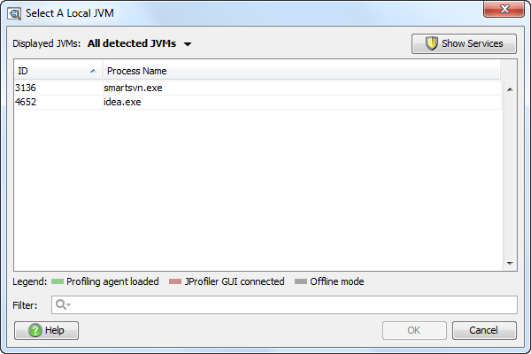

Profiling Modes |
The three modes result from trade-offs between convenience and efficiency. It is most convenient to simply attach the JProfiler GUI to any running JVM ("Attach mode"), but it is most efficient to load the profiling agent and startup and tell it about the profiling settings immediately ("Profile at startup"). A middle way is to load the profiling agent at startup and tell it later on what the profiling settings should be ("Prepare for profiling").
The fourth mode is used when the use of a JProfiler GUI is not desired or technically possible ("Offline mode").
For profiling Java 1.6 or higher, JProfiler supports attaching to a running JVM and loading the profiling agent on the fly.

Attach mode has some drawbacks since some capabilities of the profiling interface are not available that way. JProfiler notifies you in the GUI where this is the case. Also, to instrument classes, JProfiler has to retransform them, which takes more time and resources compared to the "Profile at startup" mode.
To attach to a remote JVM that has not been prepared for profiling, JProfiler offers a command line tool jpenable that loads the profiling agent and makes it possible to connect with a remote session from another computer.
To profile an application at startup, the profiling agent has to be activated before the JVM is created. This is achieved by adding the special JVM parameter
-agentpath:[path to jprofilerti library]
for Java >=1.5.0 (JVMTI). You rarely need to add this JVM parameter manually. For
launched sessions and
IDE integrations JProfiler does this automatically, for other cases,
there are integration wizards. They also take case of
potential other VM parameters that are required for profiling.
By default, the profiling agent listens on port 8849. You can change that port by appending =port=8849 to the above VM parameter. Except for remote sessions, you do not have to choose a port explicitly.
The profiling agent pauses the JVM at startup and waits for a connection from the GUI to receive information about profiled classes and other profiling settings. After the connection, the normal execution in the JVM is continued. This is the most efficient way to profile an application, since no retransforming of already loaded class files has to be performed.
Alternatively, it is possible to let the application start up immediately and wait for a connection from the JProfiler GUI. In that case, the instrumented classes have to be retransformed after the JProfiler GUI tells the profiling agent about the profiling classes.
This mode is activated by appending ,nowait
to the -agentpath VM parameter. In most cases, this is handled by the integration wizard.
For maximum efficiency, it's also possible to append ,config=[config file] and
,id=[id] parameters to instruct the profiling agent to take the profiling settings from a
particular session in a particular config file. If you connect with the same profiling settings, no classes
will have to be retransformed.
In any case, this mode is more efficient than attach mode since a lot of instrumentations are independent of the profiling settings. Those instrumentations are performed as the classes are loaded and the number of retransformed classes is lower. Also, all capabilities of the profiling interface of the JVM are available in this mode.
For automated profiling or for situations where it is not possible to attach a JProfiler GUI due to network restrictions, you can profile without a profiling GUI. In that case, you need to instruct the profiling agent when to record data, what data should be recorded and when snapshots should be saved. This is done with triggers which are activated for certain events and can execute a series of configurable actions.
This mode is activated by appending
,offline,config=[config file],id=[id] to the -agentpath VM parameter.
Usually this is handled by the integration wizard. Similar to the "Prepare for profiling" mode, the selected
session in the specified config file will be used for the profiling settings. The trigger configuration from
that session controls recording and saving.
The profiling results are only saved to snapshot files, it is not possible to attach a JProfiler GUI in offline mode. However, you can control data recording and snapshot saving manually with the jpcontroller command line controller.